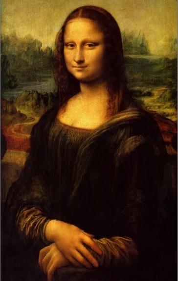

The purpose of this project was to use seam carving for content-aware image resizing. It is based on this paper. The idea is to compute an optimal seam along which to remove pixels of the image. By defining an energy function at each pixel, we can find an 8-connected path either vertically or horizontally through the image with minimum total energy using a simple dynamic programming algorithm. The following illustrations, excluding the bells and whistles section about different energy functions, all use the L2 norm of the gradient -- sqrt((dx)^2 + (dy)^2). I further assume that at the image borders, neighboring pixels are black, for the purposes of gradient computation. In order to do horizontal seams, I simply transpose the image first, calculate vertical seams, and then transpose the image back for displaying and saving purposes, as suggested.
I was able to generate some awesome images! Photo credits are at the bottom of the page.

1. Make It Fast
I made my program run faster by storing the optimal seam at each image size into JSON files, so that the next time one would like to resize the image, these seams can be read instead of being recomputed by dynamic programming.
2. Seam Insertion
I also tried my hand at seam insertion, and the results were very successful! I employed a simple algorithm: supposing we want to insert n rows/columns, compute n vertical seams as if they were being removed, then for each pixel in each seam, shift over the row, starting there, to the right and insert at that position the average value of the neighboring pixels. Here are some results.
3. Different Energy Functions
I implemented and tested three different energy functions for this project: L1 norm of the gradient, L2 norm of the gradient, and entropy (built into the image processing library I used). The L1 norm and L2 norm yielded nearly identical results, whereas the entropy function yielded slightly different results for certain images. In image processing, entropy measures the amount of information coded in an image -- an image with high entropy cannot be compressed as much as one with low entropy, because it contains fewer runs of same-valued pixels. Here are some results and analysis.
The most important thing that I learned from this project was definitely that difficult-looking and very cool image processing techniques are not far beyond my grasp without any starter code! I remember when I first watched the video in lecture, I was dazzled and imagined that the implementation of such a resizing algorithm would require thousands of lines of programming and a complex energy function derived from arcane mathematical principles. However, with just a few lines of code and a basic L2-norm gradient function, I was able to generate the same behavior, which is very inspiring!
Photo Credits: All images were obtained from Google Images search, except for one of the fish images which I took myself.